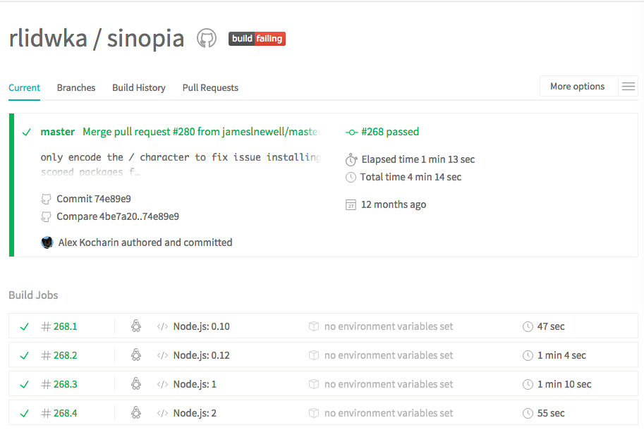
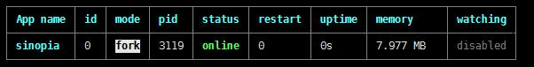
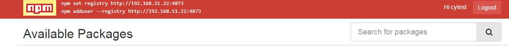
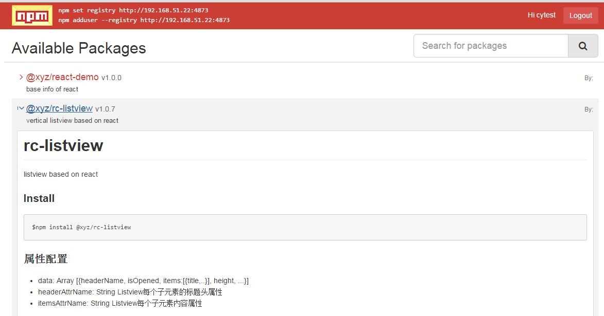

目标
通过sinopia部署私有npm，私有包托管在内部服务器，供内部成员使用；公有模块仍走外部npm下载，下载后会缓存到内部服务器。
部署环境
|
|
安装
ssh登录linux服务器
新目录并安装
|
|
编译失败
查看Issue，发现有各种安装问题，而且作者已经1年多没有维护了。
使用指令
虽然编译无问题，但无法从npm中拉取开源包
然后查看travis CI，决定换个node版本试试。

使用低版本node
在server上安装node多版本管理工具nvm
编译成功了！
nvm相关命令
启动
|
|
启动日志
启动后会在当前目录下生成sinopia文件夹，里面有config.yaml和storage，添加用户后会自动创建htpasswd。
config.yaml是配置文件，storage是来用缓存从上游npm拉取的开源包，同时也保存内部发布的私有包，htpasswd是用来保存用户账号密码信息。
配置编辑
|
|
完整配置：https://github.com/rlidwka/sinopia/blob/master/conf/full.yaml
保存后重新启动，使用pm2启动
安装pm2: npm install -g pm2
启动：

创建用户
设置npm镜像地址
也可以手动修改.npmrc文件 registry = http://server的ip:4873/
添加用户
npm adduser
按照命令行中的提示，依次输入Username、Passworld、Email完成用户的创建
客户端使用
浏览器查看 http://server的ip:4873/
看到以下界面

客户端配置registry源为服务器
如果需要代理访问外网，客户端也不需要设置proxy，因为服务器已经设置了。
可以使用nrm管理多镜像
安装模块
发布私有包
在发布模块前，需要先登录 npm login
私有包命名@scope/package
npm publish
npm包的版本号一般都是x.y.z的形式
x表示主版本号，通常有重大改变或者达到里程碑才改变
y表示次版本号,在保证主体功能基本不变的情况下，如果适当增加了新功能可以更新此版本号
z表示补丁号，一些小范围的修修补补就可以更新补丁号。
第一版本通常是0.0.1或者1.0.0，当修改了代码，需要更新版本号重新发布到npm
更新补丁再发布
发布私有包后发现浏览器多出了刚发布的私有包列表
